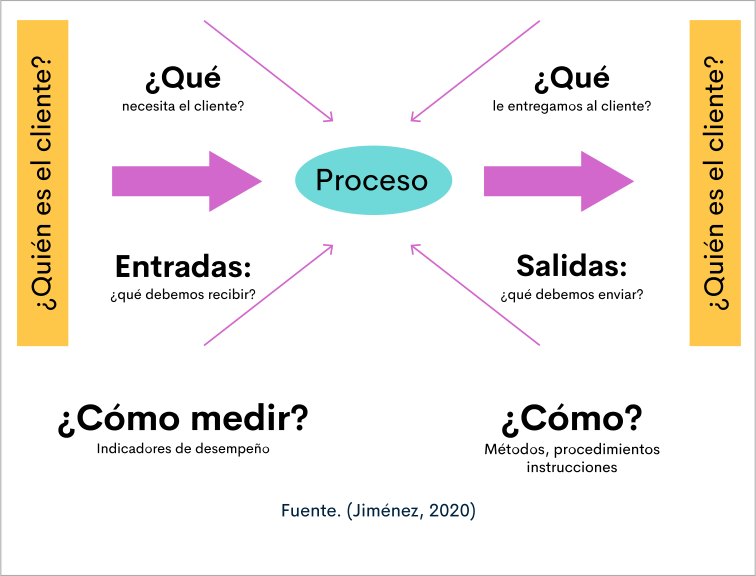

Introducción
Los antecedentes de la historia muestran el oficio de las personas que comprobaban, lo que realizaban las otras personas, con el tiempo las diferentes agremiaciones de los oficios eran quienes establecían una serie de reglas para normalizar los materiales y los productos. Una vez se inició la producción en serie, se requirió especialización del trabajo y con ello la inspección del producto terminado.
Conforme al avance de la tecnología y la gestión de los procesos, los cambios en las necesidades y expectativas del cliente, se desarrollaron las normas, por tanto, se requiere la documentación y personal especialista en resolver los problemas de calidad; lo cual prontamente no fue suficiente para los cambios y la mejora de calidad exigida en las certificaciones de las normas que se crearon a nivel internacional.
Teniendo en cuenta lo anterior, la nueva visión de empresa valora la dimensión humana recurso fundamental de la empresa, con los cuales se debe articular nuevas maneras de comunicación, motivación y colaboración, dotando al personal de recursos tecnológicos y materiales, además de capacitación en donde actualicen o desarrollen más habilidades, se formen líderes para la gestión de la calidad, teniendo como resultado, personal más comprometido con la excelencia, con más capacidad de trabajo en equipo con otros, el caso de otros auditores; para desarrollar planes y programas los cuales logren establecer un sistema de calidad que garantice la mejora continua de la organización.
1. Procedimiento de auditoría
Las especificaciones de calidad establecidas para un producto son dadas por las normas relacionadas con este y las políticas de calidad de la empresa. Cada empresa desarrolla su normatividad, procedimientos e instructivos para realizar los procesos productivos, así mismo para realizar las inspecciones.
La auditoría es el análisis en donde se compara el grado de cumplimiento de los requisitos de calidad establecidos por la empresa, por la norma o por el cliente. Por lo tanto se constata un hecho y se informa el cumplimiento con las normas y procedimientos.
La información recolectada en una auditoría debe presentarse en informes a la dirección de la empresa, una vez se ha comunicado los resultados a los líderes y personas encargadas del proceso. Dentro del informe se debe describir, el método utilizado en la auditoría, la valoración de las áreas o procesos auditados, y las observaciones y mediciones realizadas. Las propuestas, en otras palabras, son las acciones de mejora, se deben presentar, una vez se realice un análisis dispendioso y realista con el fin de cumplir con los objetivos de calidad de la empresa.
Una vez la alta gerencia reciba los informes debe evaluar de manera objetiva y con mirada sistemática la eficacia del sistema de calidad y estratificar las situaciones de riesgo para dirigir su atención a los planes de mejora que fortalezcan la gestión de la calidad.
1.1. Características de la auditoría
Toda auditoría debe ser realizada en forma analítica, sistémica y con un amplio sentido crítico por parte del auditor. Cada proceso debe estar libre de conflictos de intereses del examinador, quien actuará siempre con independencia para que su opinión tenga una verdadera validez ante los usuarios de esta.
La Auditoría al ser un proceso de evaluación debe poseer un patrón contra el cual efectuar la comparación y poder concluir sobre el sistema de producción examinado. Para realizar una Auditoría, se requiere que el auditor tenga un gran conocimiento sobre la estructura y el funcionamiento tanto de la unidad económica de la empresa como del proceso que se inspecciona así como de la normatividad legal a la cual está sujeta.
Las auditorías en la empresa deben ser continuas y deben contribuir de forma efectiva y oportuna a la identificación, análisis y evaluación de los riesgos, por lo tanto deben ser estratégicas, es decir enfocadas en proporcionar una solución, objetivas y confiables. Así mismo los auditores deben actuar basados en conductas éticas de confidencialidad, discreción e integridad.
1.2. Procedimiento de la auditoría
Como todo procedimiento la auditoría se compone de las siguientes actividades:
Definir objetivos para tener claro que se va a auditar y para qué.
Encaminar las actividades en lo relacionado con la calidad, con el fin que no se genere desenfoque o dispersión de las acciones.
Auditar todos los criterios de calidad.
Evaluar acciones desarrolladas entre las áreas.
Su naturaleza es la objetividad.
Basada en resultados, mostrados en evidencias.
El procedimiento de la auditoría se desarrolla en tres fases:
Desarrollar un plan de auditorías descrito en el programa de calidad, el cual debe ser aprobado por la dirección de la empresa.
Tener aprobación del equipo de calidad.
Alistar la norma con la que se va a auditar, sistema de evaluación comprendida por los criterios, escala de medición y ponderación de cada aspecto a evaluar.
Informar a las personas encargadas del proceso a auditar: qué, cómo y cuando se va a auditar.
Acceso a la documentación asociada del proceso a auditar.
Acceso a las actividades a auditar.
Comunicar los hallazgos encontrados, con el fin de comparar la óptica del auditado y estructurar la apreciación firme del auditor.
Revisar los hallazgos según las respuestas de la persona auditada, si es necesario recoger nueva información, la cual se debe incluir en el informe.
Reunir a los auditores para intercambiar información, consolidar un informe para establecer las propuestas a la dirección.
Presentar el informe a la dirección.
Auditar nuevamente con el fin de revisar los avances según las acciones de mejora definidas por la dirección.
1.3. Plan anual de auditoría
Las auditorías generan un plan, el cual debe estar constituido dentro del programa de calidad de la empresa en el que se detalla lo que se va a auditar, el lugar, los tiempos, el método y el tipo de auditoría.
Los planes de auditorías deben estar programados de manera anual, además de conformar los equipos de auditores los cuales tendrán claro los aspectos a auditar. El equipo definido de auditores realiza un cronograma de actividades anual el cual debe ejecutarse conforme a lo planeado.
Los aspectos del plan anual de auditorías se pueden observar a continuación:
Los planes deben tener en cuenta:
Normas aplicables, personas, sistema de evaluación, el procedimiento, la comunicación de los resultados relacionados con los aspectos a auditar.
Información histórica de acciones correctivas anteriores, quejas y reclamos de los clientes, costos de calidad.
1.3.1. Manual de auditoría.
La recopilación de los procedimientos de las auditorías constituye un manual, el cual garantiza realizar de manera óptima el plan.
El manual debe comprender las siguientes partes:
Objetivos de las auditorías.
Introducción de las auditorías.
Descripción de las necesidades del equipo auditor.
Descripción de NAC (Nivel Aceptable de Calidad).
Determinar los procedimientos de muestreos, selección de la muestra y cantidad de muestra.
Las normas asociadas.
Metodología de recolección, tabulación y presentación de resultados.
Metodología de difusión de los resultados a las áreas interesadas.
Estructura de planes de mejora.
Frecuencia de ejecutar auditorías.
Descripción de la metodología para el seguimiento de avances de las acciones de mejora.
Las ventajas de contar con un manual de auditoria es que se puede conocer el proceso, por tanto facilita las acciones de la auditoría y se confía en sus propias observaciones. En cuanto a las desventajas se puede mencionar que en la recolección de datos pueden obviar ciertos datos que afecten el desempeño de calidad del módulo y al no tener información documentada se dificulta establecer acciones que mejoren los resultados de calidad, asi como que se pueden generar falta de condiciones óptimas como tiempo para realizar una auditoría de manera exhaustiva.
Como se había mencionado antes el personal es un recurso de la empresa y por consiguiente la auditoría requiere de personas con formación, experiencia y pensamiento crítico para el desempeño de sus funciones. Por lo que los auditores pueden ser:
Coequiperos de la misma área a auditar.
Inspectores de calidad, personas especializadas de mando medio, que cuentan con independencia con respecto del objeto a auditar. Su participación no afecta los costos de calidad pues mantiene el costo derivado de sus funciones y puede suceder que sus observaciones no tengan el impacto esperado en la dirección para que se realicen las acciones necesarias.
Auditores esporádicos son personas que trabajan en otra área de la empresa, pero tienen la experiencia como auditor, de forma que al participar en los procesos de auditoría adquiere nuevos conocimientos sobre el funcionamiento de la empresa, asi mismo, las actividades que realiza en otro espacio pueden afectar la actividad de auditoría encomendada.
Auditores parciales, son personas que hacen parte del equipo de calidad y dentro de sus actividades está la de realizar auditorías, cuentan con la formación y la experiencia en la actividad, pero generalmente no cuentan con tiempo disponible para atender de manera completa las auditorías y acciones asociadas a la misma, de manera diaria o inmediata.
Auditores totales, son personas externas a la empresa contratadas para realizar la actividad. Cuentan con el tiempo y la experiencia para atender de manera óptima las auditorías necesarias y tienen credibilidad en la parte operativa y dirección para la toma de decisiones.
Auditores externos, son también llamados también consultores, los cuales cuentan con alto nivel académico y experiencia que genera credibilidad para los objetivos planteados de la auditoría, son contratados por la necesidad de la empresa en los casos de solicitud de la certificación en una norma, como es el caso de la norma ISO 9001:2015.También son encargadas de evaluar el sistema de gestión de la empresa certificadora.
Las personas que hacen parte de un equipo auditor deben cumplir con un perfil definido por su formación integral, su experiencia, capacitación, nivel de especialización y compromiso ético con sus actividades.
Teniendo en cuenta lo anterior se describen las siguientes características que debe cumplir un auditor:
Título profesional en áreas similares de los procesos estratégicos y de apoyo en las empresas.
Experiencia en el manejo de normas y procesos interdisciplinarios como financiero, comercial, administrativo, legal.
Capacidad de trabajo en equipo y manejo de excelentes relaciones interpersonales.
Conocimiento en normas legales de los procesos de la empresa.
Tener las habilidades y capacidades técnicas para desarrollar las funciones asignadas.
Ser buen observador crítico, analítico y sensato para emitir juicios.
Tener cualidades de pedagogía con el fin de propiciar un entorno de aprendizaje.
Demostrar a través de sus juicios y actuaciones reconocimiento y respeto por parte de los auditados.
Independencia de criterios, trabajar de manera libre, e informar si se presenta alguna inhabilidad.
Capacitación continua en auditorías o temas relacionados con las diferentes empresas y sus procesos.
Capacidad de análisis y proyección de la situación para establecer decisiones acertadas.
Tener valores como conciencia social, solidaridad, compromiso, ética en su actuar.
Capacidad de afrontar retos y destreza para comunicarse tanto de forma oral como escrita.
Debe ser objetivo, su opinión debe ser honesta e imparcial.
Contar con competencias digitales.
1.3.2. Planificación de la auditoría.
En cuanto a los encargados de planear las auditorías depende de la naturaleza de esta, si es interna es la empresa en su programa de auditorías quien las planea, en el caso que se encuentre en proceso de certificación, la planeación de la auditoría la realiza la empresa auditora y el auditor asignado.
Una vez se realiza la auditoría para procesos de certificación de alguna norma, se presentan tres opciones de decisión a tomar derivada de los resultados encontrados:
El sistema de calidad está cumpliendo con los requisitos de la norma relacionada.
El sistema de calidad no está cumpliendo con los requisitos de la norma relacionada. Presenta observaciones o hallazgos los cuales se pueden subsanar si se realizan acciones correctivas que pueda hacer que se acepte el sistema de calidad.
El sistema de calidad no cumple con los requisitos de la norma relacionada.
El resultado de la auditoría impacta no solo a la empresa, incluye al cliente quien puede establecer la norma como condición para las relaciones de negocios con la empresa auditada. En la siguiente figura podemos observar la dimensión humana y los aspectos relacionados.
Sean las auditorías internas o externas, es importante mencionar la participación del personal de la empresa en el desarrollo de la auditoría, siempre y cuando se encuentre especificado en sus responsabilidades; realizan las siguientes acciones:
Responden las preguntas formuladas por el auditor de manera precisa y concreta, mostrando las evidencias solicitadas.
Asisten a las reuniones de apertura y cierre con actitud de atención y disposición.
Si es su competencia, maneja el producto y los métodos para su inspección.
Acompaña al auditor en sus actividades y si es asignada la función apoya para guiarlo en la empresa.
Uno de los recursos de especial atención es el espacio para que el auditor pueda realizar sus actividades, los cuales deben cumplir con las siguientes condiciones:
Espacio cómodo cuya área sea holgada para poder colocar muebles y equipos, además debe tener privacidad para revisar con tranquilidad sus documentos o elementos a inspeccionar.
Espacio con seguridad para resguardar los documentos auditados, registros e informes.
Dotado de recursos como computador, impresoras, acceso a internet para realizar los análisis y la generación de informes.
1.3.3. Análisis del sistema de calidad.
Se realiza conforme al sistema de gestión de la empresa y a su vez a las normas relacionadas. La extensión del análisis depende de las intenciones de la auditoría, en el caso que sea conforme a una norma, depende de las actividades estipuladas a auditar dentro de la misma.
Los aspectos para analizar en las auditorías se pueden observar en la siguiente tabla:
2. Tipos de auditorías
Las auditorías como recurso para la gestión de la calidad pueden ser:
2.1. Auditoría intermedia
Es la programada en medio de las auditorías internas o externas, al término de una fase o parte de la auditoría total, antes que finalice, con el fin de poder evaluar esa parte para que la empresa pueda realizar los cambios necesarios antes que termine la auditoría.
Es importante la confidencialidad y buena comunicación del auditor con la empresa auditada, con el fin de lograr mejorar los resultados.
En procesos de certificación, se programan auditorías intermedias para mejorar los resultados, las cuales son realizadas por el consultor o auditor externo contratado por la empresa auditada.
2.2. Auditoría final

Es la última auditoría en el proceso de certificación ISO 9001, cuyos resultados son definitivos para otorgar la certificación a la empresa auditada. En ella debe constatar que se tuvo en cuenta los hallazgos encontrados, se realizaron las acciones correctivas para mejorar el sistema.
2.3. Auditoría Interna
Conocidas por desarrollarse en primera fase en un sistema de gestión, se conocen también como auditorías de primera parte, corresponde a un auto evaluación de la empresa con el fin de comprobar la conformidad respecto a una norma o las especificaciones establecidas por la empresa. La dirección responsabiliza a personas de la empresa que puedan realizar la revisión de los productos, procesos y procedimientos, evaluando la calidad mediante las diferentes técnicas de calidad.
El auditor valora la efectividad de los controles de calidad, pues debido en gran medida al distanciamiento entre la dirección y el área de producción se puede desconocer el cumplimiento de los planes de calidad, puede ser a causa del tamaño de la empresa, el uso de tecnología, la comunicación o la localización entre las plantas de producción y el área administrativa.
Toda auditoría debe establecer:
Objetivos y alcance: se establece que se va a auditar, los planes, programas, que pueda realizar las recomendaciones y los límites de la auditoría.
Funciones y responsabilidades: precisar las actividades sin eliminar responsabilidades a miembros de la parte operativa. Mantener la coordinación de las actividades y realizarlas con ética.
Cronograma de auditoría: se determinan de acuerdo con un programa de auditorías por lo tanto se conoce la fecha a realizar de manera previa, la frecuencia es conocida por el personal, y si existe la necesidad de ajuste de fechas puede ser modificado con previo acuerdo entre el equipo de calidad y la dirección de la empresa.
Orden de la auditoría: Se tiene en cuenta el sistema y los requisitos a auditar, además se puede realizar una evaluación en detalle del proceso o producto a auditar.
En la siguiente imagen puede observar partes a auditar, las cuales se explicitan a continuación.
En los planes de calidad se auditan los problemas relacionados y se asigna prioridad. En la auditoría de procesos se compara lo descrito en planes de calidad y su implementación en la realidad de la empresa.
Los pasos para realizar la auditoría son los siguientes:
Dividir el sistema en las actividades a evaluar.
Asignar en cada actividad los criterios a evaluar.
Asignar un porcentaje de valoración de cada criterio a evaluar.
Evaluar cada criterio y asignar el puntaje.
Determinar según el porcentaje el grado de cumplimiento.
Realizar el informe.
En la auditoría de procesos se compara que lo descrito en los planes de calidad se implementó en la realidad, comprende los siguientes aspectos:
Materiales: selección, identificación y monitoreo de los materiales.
Cambios de los procesos.
Especificaciones de los procesos.
Desarrollo de cada producto.
Trazabilidad.
Material no conforme.
Condiciones de trabajo: iluminación, ventilación seguridad, orden y aseo.
Instrumentos de medición.
Puesta a punto de máquinas.
En el análisis de los procesos debe tener en cuenta los fallos del proceso, la capacidad del proceso y las quejas y reclamos de los clientes.
En el análisis de los proveedores debe tener en cuenta el costo que puede representar las distancias, comunicación y la apreciación de manera despectiva que puedan tener los proveedores con respecto a la auditoría, es necesario acordar con los proveedores para auditar:
Materiales: selección, identificación y monitoreo de los materiales.
Cambios de los procesos.
Especificaciones de los procesos.
Desarrollo de cada producto.
Trazabilidad.
Material no conforme.
Condiciones de trabajo: iluminación, ventilación seguridad, orden y aseo.
Instrumentos de medición.
Puesta a punto de máquinas.
En el análisis de los procesos debe tener en cuenta los fallos del proceso, la capacidad del proceso y las quejas y reclamos de los clientes.
La auditoría del producto es la evaluación una vez se realizó la inspección, en donde se valore la calidad y la proyección en auditorías futuras. Una auditoría se puede realizar al ser recibido por el cliente, pero genera altos costos y se dificulta por políticas comerciales y la distancia con el cliente.
En la auditoría se compara de acuerdo con una norma y los procedimientos de la empresa en los que se puede:
Establecer comunicación abierta entre los auditores y los miembros del equipo de producción.
Se relacionan los aspectos de producción y comerciales con el fin de acordar los requisitos a enfocar los esfuerzos para mejorar.
Aplicación de las normas de calidad.
Direccionar los planes de calidad.
La metodología en la auditoría de los procesos y los productos se realiza conforme la valoración de indicadores por atributos o por variables teniendo en cuenta lo realizado en:
Los procesos, teniendo en cuenta la ingeniería de calidad: conceptualización del orden de los procesos y la especificación de los puntos críticos del proceso productivo y puntos de inspección y los resultados de la inspección. Además realizar gráficos de calidad e incluir en los análisis acciones de corrección ejecutadas, y su influencia en la mejora de la calidad.
Los productos terminados, en los cuales se debe considerar el método de inspección, punto inspección producto terminado, criterios de aceptación y rechazo. La clasificación de los defectos y las tablas de recolección de datos. Por último los informes de calidad.
Así mismo y con el fin de documentar el proceso de auditoría se definen los documentos utilizados en la auditoría, como los formatos, procedimiento de la auditoría, instructivos para el desarrollo de las actividades de la auditoría y listas de chequeo.
Con base en los procedimientos se crean las preguntas de los requisitos, teniendo en cuenta el mapa de preguntas se redactan las preguntas específicas y se realiza la lista de verificación. Es importante relacionar el requisito de la norma.
Se redactan las preguntas según las siguientes pautas:
Usar siempre signos de interrogación.
Usar términos cotidianos, léxico entendible.
La respuesta exige una evidencia o comprobación.
Orientada en establecer la conformidad del cumplimiento.
Expresión amable.
Exige respuesta objetiva.
Adheridas a la norma.
En la siguiente figura del diagrama de tortuga se muestran las preguntas básicas para así desarrollar las preguntas específicas que se necesitan para construir la lista de verificación.
2.4. Auditoría externa
Las auditorías externas son las realizadas en segunda y tercera parte en la aplicación de un sistema de gestión de calidad.
Las de segunda parte son las realizadas por las partes que tienen interés en mayor medida comerciales como es el caso de los clientes o proveedores. Así mismo, las de tercera parte son realizadas por organizaciones independientes que pueden acreditar en una norma como es el caso de la ISO 9001:2015.
En la auditoría externa también se realiza un cronograma de auditoría el cual es acordado entre el auditor y la empresa auditada, es importante que la dirección no permita el liderazgo en el establecimiento de las fechas por parte del auditor. Los tiempos de duración dependen de la complejidad de los procesos y el tamaño de la empresa, y es necesario prever tiempos límites sean mínimos y máximos para atender si se presenta alguna novedad y retrasos.
3. Premios de calidad
Existen premios con el fin de reconocer el liderazgo de la calidad tanto a nivel internacional como a nivel nacional, a los ganadores se les entrega una medalla como símbolo del premio. Estos premios generan competitividad conforme la exigencia del mundo globalizada de más altos estándares de calidad buscando aumentar siempre el nivel hacia la excelencia.
Los premios internacionales son:
Premio Malcolm Baldrige: su nombre es por el secretario de comercio de EE.UU. de 1981, quien creía la calidad como factor clave de la prosperidad; el premio se creó a partir de 1987. El premio es otorgado a empresas de diversos sectores.
Premio canadiense a la excelencia.
Premio iberoamericano de la calidad.
Premio colombiano a la calidad para la exportación: creado desde 1975 como estímulo a la empresa con avance tecnológico, a partir de 2019, estimula a las empresas que demuestren altos estándares de calidad como estrategia para la exportación de su productos y servicios. Dirigido a pymes de los diferentes sectores productivos del país.
Premio europeo de la calidad: creado desde 1991, los organizadores son EOQ, (Organización Europea para la Calidad), EFQM (Fundación Europea de la Calidad) y la comisión europea, herramienta para evaluar y mejorar la calidad total.
Premio Deming a la calidad: En honor a Edward Deming, otorgado por la unión japonesa de ingenieros y científicos JUSE, a empresas tanto de origen japones como de otras partes del mundo; que demuestren el mejoramiento de la calidad.
Como todos los premios tienen criterios relacionados con el control total de calidad además de varias categorías de entrega. Los criterios a evaluar se pueden observar en el siguiente cuadro y se debe tener en cuanta que cualquier empresa que cumpla con los requisitos establecidos para la participación puede obtener uno de estos premios.
4. Norma ISO 19011
Las actividades de auditoría se iniciaron en los años 60 pero fue en la década de 1970 que se crearon las normas de la auditoría de los Sistema de Gestión. La ISO publicó la norma Directrices para la Auditoría de los Sistemas de Gestión ISO 19011:2018.
Esta norma en particular orienta los principios de las auditorías para todos los tipos y tamaños de empresas, concentrándose en las auditorías de primera parte o internas y las auditorías realizadas por las organizaciones a sus proveedores externos y a otras partes interesadas externas o auditorías de segunda parte. Así mismo orienta a las auditorías externas realizadas con fines diferentes a los de la obtención de la certificación en sistemas de gestión (de tercera parte).
4.1. Hallazgos de las auditorías
Según la norma ISO 9001 los hallazgos son “resultados de la evaluación de la evidencia de la auditoría recopilada frente a los criterios de auditoría”, por lo tanto, se puede concluir que los hallazgos son los registros, eventos, documentos que se presentan o aparecen en una auditoría y con las cuales se puede evaluar si cumple o no cumple con los requisitos de calidad.
Los hallazgos se clasifican en:
No Conformidad: según la norma ISO 9001 es un incumplimiento de un requisito de la norma, legal o de cualquier requisito especificado en los procedimientos del sistema de gestión de la calidad referente a los productos o servicios que suministra la organización. Por lo tanto, una falla o un error en la empresa por el inadecuado desarrollo de los procesos se considera como no conformidad.
Ejemplos:
No se evidencia de forma precisa en el mapa de procesos las entradas y salidas esperadas.
En el control de inventarios de materia prima no coincide los registros de la tela referencia 01, el elástico referencia 101 y el hilo referencia c1321, de la información en el software con el inventario en físico.
No se evidencia en la revisión de perfiles y fichas del personal de corte la formación recibida en el proceso de trazo y corte.
La empresa no evidencia pruebas de laboratorio de textiles que demuestren la estabilidad dimensional conforme lo descrito en fichas técnicas de los productos y solicitud del cliente.
Una vez se presenta la no conformidad se debe proceder de la siguiente manera:
Describir la no conformidad: se especifica de manera clara e identificable el hallazgo.
Corrección inmediata: realizar la acción necesaria para corregir o revertirlo.
Analizar la causa: una de las metodologías más conocidas para encontrar las causas, es la de los 5 porqués; la cual consiste en preguntar de manera insistente con el cuestionamiento de por qué, una vez se tiene la respuesta preguntar nuevamente hasta definir la causa raíz.
Acción correctiva: una vez se define la causa raíz se establecen las acciones correctivas para eliminar la ocurrencia de la no conformidad.
Eficacia de la acción: verificar que la no conformidad no se presenta de nuevo, en el caso que se vuelva a presentar se debe analizar pues lo más posible es que no se encontró la verdadera causa raíz.
Observación: existe un cumplimiento, pero en un futuro puede convertirse en un incumplimiento. Representa un riesgo por lo cual es importante la especial atención para analizar y tomar las acciones correctivas.
Ejemplos:
Aunque se llevan registros de las evaluaciones de las formaciones no existe claridad sobre los resultados de esta.
No se puede comprobar la vigencia del contrato con uno de los asesores contables.
Se observa que se lleva un registro exigido por el cliente en el contrato, pero no se encuentra descrito en el procedimiento.
Oportunidad de mejora: existe un incumplimiento, pero tiene un margen para que pueda optimizar el hallazgo encontrado. Se deben igual analizar, pero teniendo en cuenta el costo beneficio de la empresa, el cual en varios casos puede diferenciarse del criterio del auditor.
Ejemplos:
Se puede mejorar la comunicación si se expresa quienes tienen la autoridad en las diferentes actividades.
Sería recomendable adquirir un paquete de software especializado para el análisis de datos de las inspecciones.
La empresa podría considerar la entrega de diplomas al personal que desarrolló el curso realizado.
4.2. Inspección vs auditoría
La diferencia entre la auditoría e inspección puede ser difusa, pero se debe entender que se centra en que el análisis de la auditoría es en el sistema, observa sus puntos débiles y fuertes de calidad; en la inspección, el análisis se realiza de manera puntual en un momento determinado. Ambas se requieren, ya que tienen varios aspectos en común y a su vez se complementan. No se deben realizar de manera simultánea y la persona puede ser la misma realizando ambos roles, pero se debe tener claro en el caso del inspector es un rol de supervisión del proceso, en el caso del auditor es un rol de consultor.
En la siguiente tabla se observan las diferencias entre ambas:
Una vez se reconoce la importancia de la auditoría como parte de la gestión de calidad de una empresa, la realización de auditorías debe generar los siguientes resultados:
Gestión de calidad por procesos.
Determinar puntos críticos y puntos fuertes dentro del sistema.
Generar acciones de mejora y realizar el seguimiento con el fin de evaluar el avance y con ellos los indicadores de la empresa.
Glosario
Efectividad: considerada como el equilibrio entre la efectividad y la eficacia.
Eficacia: es el nivel de la capacidad de conseguir los logros propuestos.
Eficiencia: es la relación dada por los resultados obtenidos por la optimización en la utilización de los recursos.
Good Will: Se refiere al prestigio alcanzado por la empresa, el buen nombre que hace que se valore el negocio comercialmente.
Staff: equipo de personal que realizan actividades de asesoramiento.
Material complementario
| Autor, (año del documento o material), Nombre del documento o material. | Tipo de material ( Video, capítulo de libro, articulo, otro) | Enlace del Recurso o Archivo del documento o material |
|---|---|---|
| Colombia Productiva. (2020). Premio Nacional de la Calidad a la Exportación | Página web | Ver |
| Rodríguez, D.M., García, C.A., Ruiz, J.C. (2016) La auditoría y su control de calidad: una mirada desde las normas de aseguramiento de la información en Colombia. Contexto 5, 63- 74. | Articulo PDF | Ver |
| SENA (1990) Procedimientos para el control de la calidad. | Ver | |
| SENA. (2020). Informe de auditoría. | Archivo Excel | Ver |
| SENA. (2020). Lista de verificación auditoría interna. | Archivo Excel | Ver |
| SENA. (2020). Plan de auditoría. | Archivo Excel | Ver |
| SENA. (2020). Programa anual de auditoría. | Archivo Excel | Ver |
Referencias bibliográficas
Auditool.org. (2020). Auditool.
CONSULTORES CTMA. (2020). Auditoría interna de calidad.
Duque de Serna, F. (1990). Procedimientos para el control de la calidad (SENA).https://hdl.handle.net/11404/4260
Evans, J. y Lindsay, W. (2015). Administración y Control de la calidad (9ª ed.). Cengage.http://www.ebooks7-24.com.bdigital.sena.edu.co/?il=786
Evolución del concepto de calidad y auditorías de calidad. Océano administración. (2020).http://oceanodigital.oceano.com.bdigital.sena.edu.co/Empresa/welcome.do?at=ip&prd=4&login=sena
Gómez, J. (2018). Guía para la aplicación de ISO 9001 2015 (1ª ed., Págs. 268 a 280). AENOR.https://www-alfaomegacloud-com.bdigital.sena.edu.co/library/search/guia%20para%20la%20aplicaci%C3%B3n%20de%20ISO%209001
Jimenez, D. (2020). Auditorías: Como hacer una lista de verificación usando diagrama de tortuga.
Pola Maseda, Á. (2009). Gestión de la calidad. Marcombo.https://elibro-net.bdigital.sena.edu.co/es/lc/senavirtual/titulos/45847
Ramón, J. (2013). Auditoría interna. (3a. ed.) Pearson Educación. http://www.ebooks7-24.com.bdigital.sena.edu.co/?il=3480
Fotografías y vectores tomados de https://www.shutterstock.com/ y https://www.freepik.es/
Licencia Creative Commons
CC BY-NC-SA
Ver licencia.